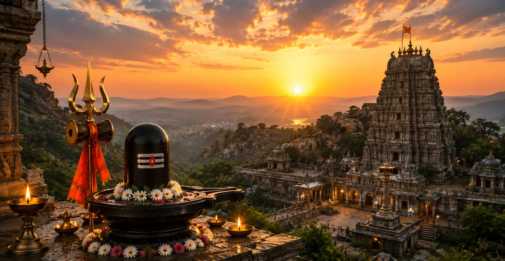

मल्लिकार्जुन की पवित्र कहानी
कोटिरुद्र संहिता का सोलहवां अध्याय भगवान कार्तिकेय के श्रीशैल पर्वत पर जाने और उसके बाद मल्लिकार्जुन ज्योतिर्लिंग के प्रकट होने की दिव्य कहानी का वर्णन करता है।
यह भगवान शिव और देवी पार्वती के माता-पिता के कोमल प्रेम को दर्शाता है क्योंकि उन्होंने अपने बेटे को सांत्वना देने के लिए उसका पीछा किया और पर्वत को हमेशा के लिए पवित्र कर दिया।
এটি ভগবান শিব এবং দেবী পার্বতীর কোমল পিতামাতার স্নেহকে চিত্রিত করে যখন তারা তাদের পুত্রকে সান্ত্বনা দিতে অনুসরণ করেছিলেন, যা পর্বতটিকে চিরকালের জন্য পবিত্র করেছিল।
यह अध्याय बताता है कि कैसे दैवीय करुणा और पारिवारिक सद्भाव मिलकर तीर्थयात्रा और आध्यात्मिक मुक्ति का एक शाश्वत केंद्र स्थापित करते हैं।
अध्याय 16 की मुख्य बातें
कार्तिकेय का संन्यास
पारिवारिक कार्यक्रमों के बाद भगवान कार्तिकेय श्रीशैल पर्वत पर चले गए।
माता-पिता का स्नेह
शिव और पार्वती प्रेमपूर्वक अपने पुत्र को सांत्वना देने और सांत्वना देने के लिए उसके पीछे चले।
ज्योतिर्लिंग के रूप में प्रकट होना
दिव्य युगल श्रीशैलम पर मल्लिकार्जुन के रूप में स्थायी रूप से प्रकट हुए।
नाम का महत्व
मल्लिका पार्वती का प्रतिनिधित्व करती है और अर्जुन शाश्वत मिलन में शिव का प्रतिनिधित्व करता है।
पूर्णिमा के दिन पूजा करें
पवित्र रात्रियों में मल्लिकार्जुन की पूजा करने से विशेष आध्यात्मिक गुण प्राप्त होते हैं।
पापों का निवारण
इस पवित्र मंदिर के दर्शन से आत्मा सभी भारी कर्म ऋणों से मुक्त हो जाती है।
इस अध्याय में मुख्य विषय
- 01भगवान कार्तिकेय की श्रीशैल पर्वत की यात्रा→
- 02कार्तिकेय के प्रस्थान के पीछे का चंचल प्रसंग→
- 03शिव और पार्वती की प्रेमपूर्ण खोज→
- 04श्रीशैलम की पवित्र ढलानों पर आगमन→
- 05मल्लिकार्जुन की दिव्य अभिव्यक्ति→
- 06मल्लिकार्जुन का व्युत्पत्ति संबंधी अर्थ→
- 07कार्तिकेय की सांत्वना और आनंदमय पुनर्मिलन→
- 08श्रीशैलम पर्वत का स्थायी पवित्रीकरण→
- 09मल्लिकार्जुन की पूजा का श्रेष्ठ फल→
- 10मुक्ति और ईश्वरीय कृपा प्राप्त करना→
- 11अध्याय 17 की ओर →
भगवान कार्तिकेय की श्रीशैल पर्वत की यात्रा
अध्याय 16 की शुरुआत इस वर्णन से होती है कि कैसे भगवान कार्तिकेय, विवाह की प्राथमिकता के संबंध में एक चंचल खगोलीय असहमति के बाद थोड़ा अलग महसूस करते हुए, श्रीशैल पर्वत पर चले गए।
उन्होंने गहन ध्यान और शांत चिंतन में संलग्न होने के लिए शांतिपूर्ण और एकांत पहाड़ी ढलानों को चुना।
कार्तिकेय के प्रस्थान के पीछे का चंचल प्रसंग
धर्मग्रंथ दैवीय पारिवारिक गतिशीलता का वर्णन करता है जहां लौकिक ज्ञान के अनुसार सबसे पहले गणेश का विवाह किया गया था, जिससे कार्तिकेय को स्नेहपूर्वक पीछे हटना पड़ा।
यद्यपि यह दिव्य लीला की अभिव्यक्ति थी, फिर भी इसने दक्षिणी भूमि को पवित्र करने के उच्च उद्देश्य को पूरा किया।
शिव और पार्वती की प्रेमपूर्ण खोज
अपने प्रिय पुत्र से वियोग सहन करने में असमर्थ, भगवान शिव और देवी पार्वती तुरंत कार्तिकेय का पीछा करने के लिए श्रीशैलम की ओर चल पड़े।
उनके मातृ एवं पितृ प्रेम ने प्रदर्शित किया कि दिव्य प्राणी पारिवारिक बंधनों को अत्यंत कोमलता के साथ संजोते हैं।
श्रीशैलम की पवित्र ढलानों पर आगमन
जब शिव और पार्वती श्रीशैलम पर्वत के पास पहुंचे, तो कार्तिकेय अपना एकांत बनाए रखने के लिए और दूर चले गए, जिससे दिव्य माता-पिता स्थायी रूप से प्रकट हो गए।
पर्वत तुरंत ही सर्वोच्च आध्यात्मिक शक्ति के एक जीवंत केंद्र में बदल गया।
मल्लिकार्जुन की दिव्य अभिव्यक्ति
अपने पुत्र और समस्त भावी मानवता को आशीर्वाद देने के लिए, भगवान शिव मल्लिकार्जुन ज्योतिर्लिंग के रूप में प्रकट हुए, उनके साथ देवी पार्वती भी मल्लिका के रूप में प्रकट हुईं।
इस उज्ज्वल रूप ने सर्वोच्च मर्दाना और स्त्री लौकिक सिद्धांतों को एक ही पूजनीय मंदिर में एकीकृत किया।
मल्लिकार्जुन का व्युत्पत्ति संबंधी अर्थ
मल्लिकार्जुन नाम 'मल्लिका' से लिया गया है, जो देवी पार्वती को दर्शाता है, और 'अर्जुन', जो भगवान शिव का प्रिय नाम है।
इस रूप की पूजा करने से दोनों देवताओं का एक साथ सम्मान होता है, अनंत कृपा और सद्भाव का आह्वान होता है।
कार्तिकेय की सांत्वना और आनंदमय पुनर्मिलन
अपने माता-पिता के प्रेमपूर्ण आगमन और भव्य प्रकटीकरण से बहुत प्रभावित होकर, भगवान कार्तिकेय का दुःख गहन खुशी और भक्ति में बदल गया।
उन्होंने ज्योतिर्लिंग को प्रणाम किया और पर्वत पर स्थापित दिव्य उपस्थिति से प्रसन्न हुए।
श्रीशैलम पर्वत का स्थायी पवित्रीकरण
भगवान शिव ने घोषणा की कि पवित्र अवसरों पर श्रीशैलम की यात्रा करने से सभी प्रमुख वैदिक यज्ञों को करने का पुण्य मिलता है।
यह पर्वत दक्षिणी भारत में एक प्रमुख तीर्थस्थल के रूप में सार्वभौमिक रूप से पूजनीय बन गया।
मल्लिकार्जुन की पूजा का श्रेष्ठ फल
पाठ इस बात पर जोर देता है कि जो भक्त मल्लिकार्जुन की पूजा फूल, जल और सच्ची प्रार्थना से करते हैं उन्हें मानसिक शांति और मुक्ति मिलती है।
शिव और पार्वती के संयुक्त आशीर्वाद से जीवन की सभी बाधाएं दूर हो जाती हैं।
मुक्ति और ईश्वरीय कृपा प्राप्त करना
मल्लिकार्जुन का ईमानदार स्मरण साधक को सांसारिक भ्रमों से ऊपर उठाता है, उच्च आध्यात्मिक क्षेत्रों में प्रवेश प्रदान करता है।
यह मंदिर पारिवारिक प्रेम और सर्वोच्च दैवीय कृपा के एक चिरस्थायी स्मारक के रूप में खड़ा है।
अध्याय 17 की ओर
श्रीशैलम पर्वत पर मल्लिकार्जुन की पवित्र कहानी को विस्तृत करने के बाद, कथा अगले दिव्य ज्योतिर्लिंग में परिवर्तित होने की तैयारी करती है।
पाठकों को अध्याय 17 में त्र्यंबकेश्वर के महान मंदिर का पता लगाने के लिए आगे बढ़ने का निर्देश दिया गया है।
अध्याय 16 की प्रमुख शिक्षाएँ
दिव्य पारिवारिक सद्भाव
यहां तक कि दिव्य परिवार भी गहरे स्नेह और माता-पिता की देखभाल का नमूना पेश करते हैं।
संयुक्त ब्रह्मांडीय सिद्धांत
मल्लिकार्जुन शिव और पार्वती के शाश्वत मिलन का प्रतिनिधित्व करते हैं।
भूमि का पवित्रीकरण
दिव्य उपस्थिति के माध्यम से श्रीशैलम पर्वत सदैव पवित्र हो गया।
पृथक्करण का संकल्प
दिव्यता करुणामय अनुग्रह के माध्यम से सभी भावनात्मक दूरियों को पाटती है।
परम तीर्थ
श्रीशैलम के दर्शन से प्रमुख वैदिक यज्ञों के बराबर आध्यात्मिक पुण्य प्राप्त होता है।
आंतरिक मुक्ति
मल्लिकार्जुन की पूजा करने से आत्मा सांसारिक बंधनों से मुक्त हो जाती है।
आध्यात्मिक चिंतन
मल्लिकार्जुन की पवित्र कहानी दिव्य महिमा और अंतरंग पारिवारिक प्रेम के सुंदर अंतर्संबंध को उजागर करती है। जब शिव और पार्वती कार्तिकेय के पीछे श्रीशैलम तक गए, तो उन्होंने प्रदर्शित किया कि सर्वोच्च वास्तविकता दूर या ठंडी नहीं है, बल्कि मानवीय भावनाओं और भक्ति के प्रति गहराई से संवेदनशील है। मल्लिकार्जुन एक शाश्वत अनुस्मारक के रूप में खड़ा है कि जहां भी प्रेम और एकता रहती है वहां दिव्य कृपा बहती है।
अध्याय 16 का संदेश जीना
अपने परिवार में सद्भाव और आपसी स्नेह को बढ़ावा दें, धैर्य और प्रेम से गलतफहमियों को सुलझाएं।
भावनात्मक उथल-पुथल का सामना करते समय, उच्च आध्यात्मिक मूल्यों से शक्ति प्राप्त करते हुए शांत चिंतन में शांति की तलाश करें।
याद रखें कि दिव्य उपस्थिति किसी भी व्यक्ति के लिए सुलभ है जो खुले, समर्पित हृदय से भगवान के पास आता है।
प्रमुख आध्यात्मिक अवधारणाएँ
श्रीशैलम पर भगवान शिव और देवी पार्वती का संयुक्त रूप।
दिव्य उपस्थिति द्वारा पवित्र किया गया पवित्र दक्षिणी पर्वत।
वह दिव्य पुत्र जिसकी वापसी ने मंदिर के प्रकटीकरण को प्रेरित किया।
मर्दाना और स्त्रैण ब्रह्मांडीय शक्तियों का सामंजस्यपूर्ण मिश्रण।
तीर्थयात्रा और हार्दिक पूजा से प्राप्त आंतरिक शांति।
अध्याय सारांश
कोटिरुद्र संहिता अध्याय 16 मल्लिकार्जुन की कोमल और पवित्र कहानी का वर्णन करता है। भगवान कार्तिकेय के श्रीशैल पर्वत पर जाने के बाद, भगवान शिव और देवी पार्वती ने प्रेमपूर्वक उनका पीछा किया, और स्थायी रूप से मल्लिकार्जुन ज्योतिर्लिंग के रूप में प्रकट हुए। यह अध्याय दिव्य पारिवारिक सद्भाव और असीम अनुग्रह का जश्न मनाता है, जो पाठक को अध्याय 17 में त्र्यंबकेश्वर की यात्रा के लिए तैयार करता है।
अक्सर पूछे जाने वाले प्रश्न
1. कोटिरुद्र संहिता अध्याय 16 का मुख्य विषय क्या है?
अध्याय 16 में भगवान कार्तिकेय के श्रीशैल पर्वत पर जाने, भगवान शिव और देवी पार्वती के माता-पिता के दौरे और मल्लिकार्जुन ज्योतिर्लिंग के प्रकट होने की दिव्य कथा का विवरण दिया गया है।
2. भगवान कार्तिकेय श्रीशैल पर्वत पर क्यों गए?
गणेश के पहले विवाह के बाद भगवान कार्तिकेय भावनात्मक वैराग्य का अस्थायी प्रदर्शन करते हुए श्रीशैल पर्वत पर चले गए।
3. भगवान शिव और देवी पार्वती ने कार्तिकेय को कैसे सांत्वना दी?
शिव और पार्वती ने प्रेमपूर्वक श्रीशैलम तक कार्तिकेय का पीछा किया, उन्हें सांत्वना देने और पर्वत को आशीर्वाद देने के लिए स्वयं को दिव्य रूपों में प्रकट किया।
4. मल्लिकार्जुन नाम का क्या अर्थ है?
मल्लिकार्जुन नाम 'मल्लिका' (देवी पार्वती को संदर्भित करता है) और 'अर्जुन' (भगवान शिव को संदर्भित करता है) को जोड़ता है, जो उनके शाश्वत मिलन का प्रतीक है।
5. अध्याय 16 आसपास के अध्यायों से कैसे जुड़ता है?
अध्याय 16 अध्याय 15 (काशी विश्वनाथ की महिमा) के बाद आता है और अध्याय 17 (त्र्यंबकेश्वर की महानता) से पहले आता है।
6. इस अध्याय का मुख्य आध्यात्मिक निष्कर्ष क्या है?
जहां भी प्रेम, भक्ति और दिव्य पारिवारिक सद्भाव रहता है, वहां दिव्यता प्रकट होती है, जो पवित्र पहाड़ों को मुक्ति केंद्रों में बदल देती है।
"श्रीशैलम पर शाश्वत प्रेम में एकजुट होकर मल्लिकार्जुन और मल्लिका दैवीय कृपा और पारिवारिक सद्भाव के अवतार के रूप में चमकते हैं।"
कोटिरुद्र संहिता के माध्यम से जारी रखें
अध्याय 16 मल्लिकार्जुन की पवित्र कहानी की पड़ताल करता है। अध्याय 17, त्र्यंबकेश्वर की महानता को जारी रखें।